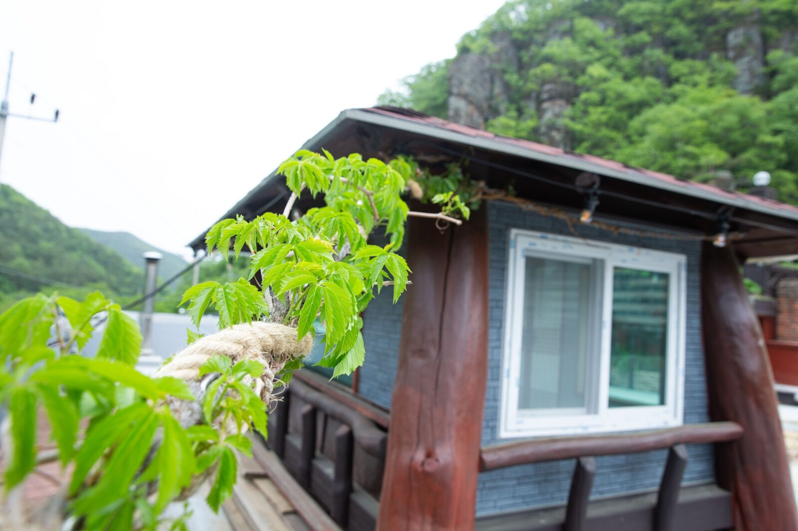
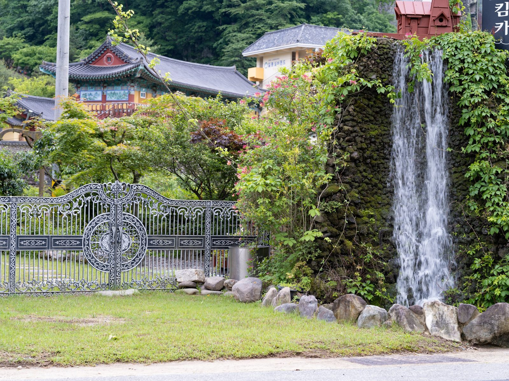

창원 사진관 소개 — 김작가 사진이야기, 시간이 쌓인 자리
2026-10-20 발행
창원 사진관을 찾으실 때 가장 궁금한 것은 아마 공간일 것입니다. 어디서 찍는지, 옷은 어디서 가는지, 사진은 어디서 만드는지. 오늘은 상남동 롯데빌딩 2층에 있는 저희 공간을 소개하겠습니다.

사랑이야기 스튜디오 창원점은 경남 창원시 성산구 원이대로 652, 상남동 롯데빌딩 2층에 있습니다. 지하 주차장이 있고, 엘리베이터에서 내리면 바로 로비가 나옵니다. 처음 오시는 분도 헤매지 않도록 안내 표시를 해 두었습니다.
문을 열고 들어서면 로비가 있습니다. 원목 테이블과 낮은 조명, 벽에 걸린 사진 몇 장. 상담은 대개 이 자리에서 시작합니다. 어떤 사진을 원하시는지, 언제 쓰실 사진인지, 몇 분이 오시는지. 앉아서 이야기하다 보면 촬영의 윤곽이 잡힙니다.

로비 옆에는 스튜디오가 있습니다. 천장이 높고, 조명을 자유롭게 세울 수 있는 구조입니다. 배경지는 흰색과 회색, 연한 하늘색, 짙은 남색을 기본으로 준비합니다. 필요하면 그 자리에서 바꿔 답니다. 배경 하나로 사진의 분위기가 크게 달라집니다.
창이 있어 자연광도 들어옵니다. 인공 조명과 자연광을 함께 쓰면 얼굴이 부드럽게 살아납니다. 특히 야외 촬영이 어려운 날에는 이 창가 자리가 좋은 대안이 됩니다. 비 오는 날에도 사진은 찍을 수 있습니다.

의상실에는 촬영용 의상이 준비되어 있습니다. 웨딩드레스와 턱시도, 한복, 파티복, 세미정장, 캐주얼까지 종류가 나뉘어 있습니다. 옷을 고르는 시간이 생각보다 오래 걸리기 때문에, 촬영 전에 미리 둘러보시길 권합니다. 사이즈는 상담 때 확인합니다.

메이크업실은 촬영장과 가까운 곳에 있습니다. 화장을 하고 옷을 갈아입고 바로 스튜디오로 이동하는 동선입니다. 이동이 짧으면 준비한 모습이 흐트러지지 않습니다. 어르신은 앉은 자리에서 편하게 하실 수 있도록 준비합니다.

액자 작업실은 사진이 마지막에 도착하는 곳입니다. 원목 액자를 직접 만들고, 사진을 끼우고, 모서리를 마감합니다. 사진을 인화해 붙이는 일부터 벽에 거는 일까지 이곳에서 끝납니다. 그래서 액자 색을 고르실 때 실제 원목을 보고 정하실 수 있습니다.

원목은 나무마다 색과 결이 다릅니다. 밝은 오크는 사진을 환하게 만들고, 짙은 월넛은 차분하게 만듭니다. 같은 사진이라도 액자에 따라 다른 사진처럼 보입니다. 어떤 사진을 어디에 걸 것인지 말씀해 주시면, 그 자리에 맞는 걸이와 크기를 함께 정합니다.


사진을 걸 공간을 미리 생각하시면 선택이 쉬워집니다. 거실 벽이면 가로로 긴 사진이, 침실 한쪽이면 세로 사진이 잘 맞습니다. 조명이 직접 닿는 자리는 유리에 반사가 생기므로 피하시는 편이 좋습니다. 이 부분은 방문 상담 때 함께 봅니다.
건물 1층에는 작은 카페가 있습니다. 촬영을 마치고 사진을 고르실 때, 커피 한 잔 두고 천천히 보시라고 권합니다. 급하게 고르면 나중에 아쉬움이 남습니다. 시간을 두고 보면 처음에 눈에 들어오지 않던 컷이 마음에 들기도 합니다.


의령점은 창원점과 분위기가 다릅니다. 경남 의령군 궁류면 청정로 1188에 있고, 마당과 야외 촬영장이 있습니다. 한복과 야외 사진을 찍으러 일부러 찾아오시는 분들이 있습니다. 두 곳을 오가며 촬영하시는 경우도 있습니다.
김작가는 오래 사진을 찍어 왔습니다. 필름으로 시작해 디지털로 넘어왔고, 그 사이 스튜디오도 여러 번 옮겼습니다. 지금의 자리에 있기까지 오래 걸렸습니다. 그래서일까요, 요즘은 사진 한 장을 찍는 시간이 예전보다 더 소중합니다.
촬영 종류는 가족사진, 웨딩, 리마인드웨딩, 한복, 장수사진, 증명사진, 프로필, 우정사진까지 다양합니다. 하지만 방식은 같습니다. 이야기를 듣고, 빛을 잡고, 표정이 풀릴 때까지 기다립니다. 서두르지 않는 것이 저희 방식입니다.
예약은 전화나 카카오톡 채널로 하실 수 있습니다. 상담은 무료이고, 촬영 날짜와 시간, 인원, 원하시는 분위기를 먼저 여쭙습니다. 그다음에 공간을 안내드리고, 옷과 준비물을 정합니다. 처음 오시는 분은 로비에서 차 한 잔 하시고 시작하시면 됩니다.
공간을 소개할 때 늘 강조하는 것이 하나 있습니다. 사진은 찍는 순간보다 그 뒤의 과정이 길다는 것입니다. 고르고, 보정하고, 인화하고, 액자에 넣고, 벽에 거는 일까지. 그 전부가 사진을 완성하는 시간입니다. 그래서 저희는 한자리에서 끝낼 수 있는 구조를 만들었습니다.
가족 단위로 오시는 날에는 순서를 미리 정해 둡니다. 어르신 단독, 부부, 아이들, 그리고 단체. 이렇게 나누면 기다리는 시간이 줄고, 아이들이 지치기 전에 촬영이 끝납니다. 대기 공간에 의자와 물을 준비해 두는 것도 그 때문입니다.
촬영 날 아이나 어르신이 컨디션이 좋지 않으시면 일정을 미룰 수 있습니다. 사진은 하루 미루면 되는 일이고, 그날의 표정은 다시 오지 않습니다. 무리해서 찍는 것보다 하루 늦추는 편이 결과가 좋습니다. 이 판단은 언제든 말씀해 주시면 됩니다.
창원점과 의령점은 역할이 조금 다릅니다. 실내 촬영과 상담, 액자 작업은 창원점에서, 야외와 마당을 쓰는 촬영은 의령점에서 많이 합니다. 두 곳 모두 예약을 받고 있으니, 원하시는 분위기에 따라 선택하시면 됩니다.
사진을 처음 의뢰하시는 분들은 무엇을 입고 가야 하는지부터 물으십니다. 편하게 오시면 됩니다. 옷은 도착해서 고르셔도 되고, 준비된 의상 중에서 맞는 것을 함께 찾으면 됩니다. 중요한 것은 옷보다 그날의 기분입니다.
촬영이 끝나면 사진을 고르는 시간이 이어집니다. 보통 세 번에 나눠 봅니다. 처음에는 전체를 훑고, 두 번째는 표정을 보고, 세 번째는 걸 자리를 생각하며 고릅니다. 이 순서로 고르면 후회가 적습니다.
마지막으로 한 가지. 사진관은 사진을 찍는 곳이지만, 사실은 시간을 맡기는 곳입니다. 그 시간을 어떻게 남길지 함께 정하는 일이 저희 일입니다. 창원에서 그런 자리가 필요하시면 문을 두드려 주세요. 남는 것은 사진 한 장입니다.
사진관은 특별한 곳이 아닙니다. 다만 한 번뿐인 날을 남기는 곳입니다. 그래서 문을 열어 두고, 조명을 켜 두고, 기다립니다. 창원에서 사진 찍으실 일이 있으면 상남동 롯데빌딩 2층으로 오시면 됩니다. 같은 자리에서 찍고 있습니다. 그 시간이 사진의 절반을 만듭니다.
자주 묻는 질문
Q. 주차는 어떻게 하나요?
A. 건물 지하 주차장을 이용하실 수 있습니다. 촬영 시간 동안 주차 안내를 드립니다.
Q. 예약 없이 가도 되나요?
A. 증명사진은 예약 없이 오셔도 됩니다. 가족사진이나 웨딩, 야외 촬영은 준비가 필요해 미리 예약하시는 편이 좋습니다.
Q. 의상은 준비되어 있나요?
A. 네. 웨딩드레스와 턱시도, 한복, 파티복, 세미정장, 캐주얼까지 촬영용 의상이 준비되어 있습니다. 사이즈는 상담 때 확인합니다.

오시는 곳
사랑이야기창원점
- 주소 경남 창원시 성산구 원이대로 652, 상남동 롯데빌딩 2층
- 전화 055-287-8022
- 영업시간 오전 10:00 ~ 오후 7:00
- 예약 전화 상담 · 카카오톡 채널
- 주차 건물 지하 주차장
김작가사진이야기 의령
- 주소 경남 의령군 궁류면 청정로 1188
- 전화 055-574-3706
- 영업시간 오전 10:00 ~ 오후 7:00
- 예약 전화 상담 · 카카오톡 채널
- 주차 전용 주차장
이 글에 한마디
댓글창을 준비하고 있습니다. 그동안 궁금한 점은 카카오채널로 남겨 주시면 바로 답변드립니다.
카카오채널로 한마디 남기기